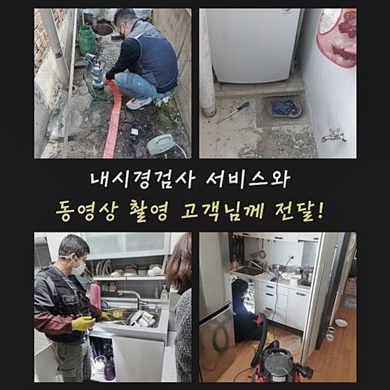
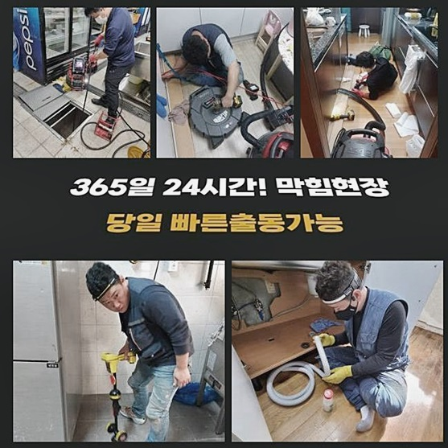
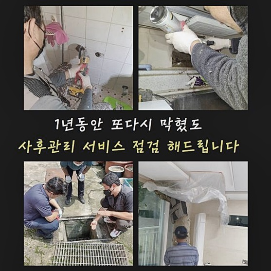
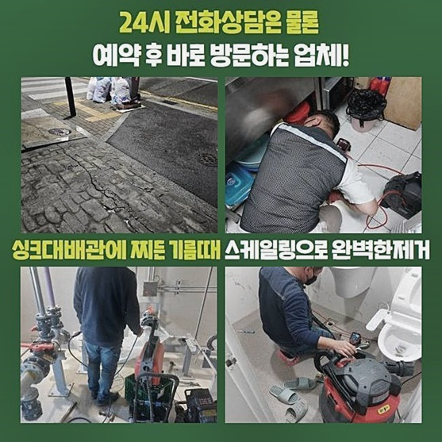
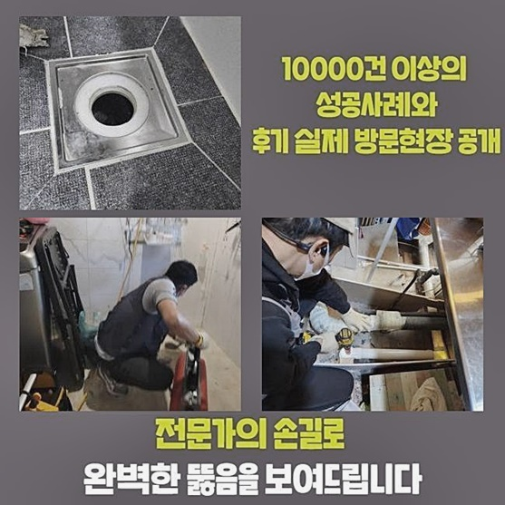
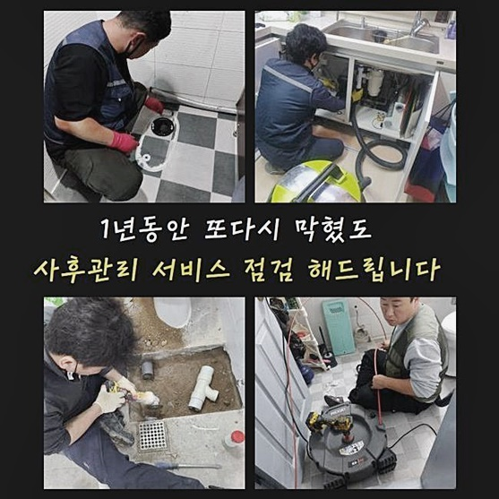

🏠 수원 신안동씽크대배수관막힘 지동 집수정청소 설비
수원 지동 싱크대막힘 전문 시공 후기

📋 작업 개요
- 위치: 수원 지동, 지동, 수원
- 서비스 유형: 싱크대막힘, 하수구막힘, 배관막힘, 집수정막힘, 누수수리, 역류해결, 뚫는업체, 배관청소, 고압세척
- 작업 일시: 2024. 9. 6. 22:07
- 업체명: 하수구수사대 (010-5615-2118)
🔍 문제 상황
수원 신안동씽크대배수관막힘 지동 집수정청소 설비
하수구막힘이 발생하면 일상을지내는데 있어서 불편함이 느껴지게되죠
하수구시스템을 되돌리기위해 다양한방법을 통하여 처리해보려고 하시고있죠
하지만 완벽한해결로는 연결되지않고 되려 과도한조치로 악화시키기도해요
평소에 지내실때 하수도막힘이 발생하지않게 간헐적으로 관리해주시는게 좋은방법이에요
작업사례를 통하여 설명드릴테니 읽어보신다면 도움될거라 생각해요
문의주신분께선 처음에 큰문제라고 생각하지못하고 방치하고계셨고 문제가 점차커져 하수관이 막힌것인데요
이번장소는 오래지어진 건물이었고 생각과는달리 깨끗히 관리되고 있었어요
그렇지만 하수구내부쪽은 관리가잘되었는지 알수가없다보니 경우를따지면서 하수구구조를 파악하고있었어요
저희들은일단 의뢰자께서 말씀해주신 내용을 참고해서 이물질들을 빨아들여주는 석션장비를챙겼고 샤프트기와 내시경까지 준비했어요
연식자체가 오래안된 건물의경우 분쇄기계를 사용하지않고 석셕기만을써서 이물질들을 제거해볼수있는 상태가 대부분이었죠

🔎 원인 분석
💡 전문가 진단: 정밀 진단 장비를 사용하여 슬러지의 고착 여부를 판명하고 타격/세척 작업을 실시했습니다.
오늘장소처럼 노후된건물에서 막힘증세가 일어난경우 분해장비를 써야만합니다
분쇄과정을 진행하게되면 시간도걸리고 전문기계를 쓰는만큼 작업비가 조금은더 나올수가있겠죠
저희들의경우 금액적인부분에 대한것을 작업착수전 공개해드린채 고객분께서 승인을하셔야지만 진행해드리고있어요
과도하게 배관을건들게되면 막힘사태가 더심각해지고 파손문제로인해 누수로 연결되기도해요
한눈에봐도 막혀있었으며 역류현상때문에 배수구가 넘쳐있는것을 마주할수있었죠
하수도에서 념쳐흐른 오물때문에 악취증세가 보였기에 신속대처가 필요해보였죠
고객분께서는 처음에 꽉 막힌 것은 아니었기 때문에 문제를 내버려두셨고 상황이 점점 악화되어 싱크대가 막히게 되었습니다
싱크대배수구에 물을내리니 물이흐르지 못하였고 하부장아래에 위치하는 연결구부분에서 오물이 역류하고있는것을 살펴볼수가있었네요
석션기를사용해 오물흡입을 위해서 시도해봤으나 이물질이끼어 흡입이 불가했어요
오래쌓인 이물질이 하수도내에 굳게 붙어있었기에 미동조차없는 상태였습니다
해결을위하여 석션기로 돌려봤지만 일부정도만 살짝흡입해 제거시킬수있었네요

🔧 작업 과정
이런상태라면 긴막대기를 하수구에넣어 해결해보려고 시도해보시는 경우도 있으실텐데요
한번더 일러드리는것으로 오랜기간 사용된 하수도에 충격이 가해지면 손상문제가 일어날수있어 전문업체의 도움을통해 처리하는것이 가장알맞은 해결법이죠
일단은 하수구세척을 진행해보기위해선 첫번째로 원인먼저 파악해보는게 필요하답니다
그렇기에 배관카메라를 하수도내부에 투입해서 배관상태를 확인해봤죠
물이차있는 상태였으며 슬러지랑 찌꺼기잔해들이 차있다는것을 내시경카메라로 고객분과함께 체크했어요
가득차있었기에 소량의 물을붓더라도 물이넘친거에요
내시경 카메라로 이미 노후화가 진행된 배관의 상태를 확인할 수 있었으며 중앙쪽에서 수직형태의 하수관이 시작되기 전까지 관 자체가 내려앉은 것도 볼 수 있었습니다
양념과기름이 상당한 대한민국음식물의 특징상 슬러지들도 쉽게생기는 것이랍니다
기름이 쌓이는것을 방지하기위해선 기름이묻은 음식은 키친타올을 이용하여 제거해준뒤 설거지하고 높은온도의 물을써서 하수구쪽에 흘려보내는방법도 좋은방법중에 하나입니다
굳은이물이 달라붙어있는 상태이기에 이런상황에서 분쇄과정을 거치게되면 손상문제로 연결될수있다보니 악품을이용한뒤 샤프트사용을 진행하기로 계획했습니다
이물질을 연하게해주는 하수구약품을 하수관에 붓고나서 일정시간이 지나면 내시경cctv로 하수구안을 다시확인한후 분해장비를 사용했어요
분쇄장비끝에 달려있는 회수형오거가 퇴적물질을 분쇄시키고 걸어빼주는 작업으로 착수하는 장비랍니다
속해서 내시경카메라로 배관안을 확인했고 샤프트기를통해 단단한이물을 잘게부수면서 막혀있는배관을 뚫고있었어요
파쇄된잔여물을 석션으로 뽑아올렸고 고압수를 쏘는 세척장비로 깔끔하게 제거하는과정도 병행해주었어요
고압세척기로 한쪽만 지속해서 쏘게되면 배관에 균열이 갈수있어 한쪽에서만 분사되지않도록 신경써서 이행해주었어요
소량이라도 잔여물질이 남겨져있다면 재차막힐수가 있기때문에 깔끔히 마무리하려고 심혈을기울여 작업했습니다
파이프관이 오래되었으므로 뚫는기계들을 조심스레 활용하는게 해결하는데 도움되었어요
오염물의 형태를 살펴봤더니 끈적하게 기름져있는 상태였으며 수많은 이물질들이 함께 뒤엉킨상태였죠


✅ 작업 완료
마무리전 촬영카메라를 활용해서 배관안쪽을 체크해주었고 오염물이 제거된 깔끔한 하수도를 두눈으로 체크할수있었습니다
관이낡은건 물론이었으며 물이빠지는쪽의 배관구조가 높은위치로 자리잡고있는 역구배형태여서 작업진행이 어려웠어요
역구배로이뤄진 배관구조라면 이물이 쉽게쌓이는 구조이다보니 간헐적으로 청소하지못하면 같은이유로 막히는문제를 경험하실수도 있답니다
이런부분들을 고객분에게 자세히 설명해드렸고 방지하는방법들을 알려드렸죠
갑작스럽게 배관이막혀 답답함을 느끼고계시다면 저희들을통해 배관케어를 받아보실것을 권고드릴게요



⚠️ 베란다 누수 및 방수 관리 방법
- ✅ 비가 많이 올 때 창틀 주변이나 아래층 천장에 얼룩이 생기는지 정기적으로 확인해 보세요.
- ✅ 우수관 주변 실리콘 마감이 들뜨거나 깨진 틈새가 있는지 손상 여부를 수시로 체크하세요.
- ✅ 베란다 바닥 타일의 줄눈(메지)이 소실되면 그 틈으로 물이 침투하여 누수가 유발됩니다.
- ✅ 누수 의심 증상 발견 시 방치하면 아래층 손실이 커지므로 즉시 전문가의 진단을 받으십시오.
💡 핵심 정리
- 확실한 장비 작업(내시경 점검 및 샤프트 스케일링)으로 원인을 뿌리 뽑습니다.
- 작업 후 1년 이내에 동일한 부위 재발 시 100% 무상 A/S 서비스를 보장합니다.
- 서울 · 경기 · 인천 전 지역에 24시간 언제든 긴급 출동할 수 있도록 항시 대기 중입니다.
❓ 자주 묻는 질문 (FAQ)
🚨 수원 지동 싱크대막힘 문제로 고민이신가요?
정확한 원인 진단과 확실한 시공으로 재발 없는 해결을 약속드립니다.
24시간 긴급 출동 | 서울 · 경기 · 인천 전지역 | 1년 내 재발 시 무상 A/S